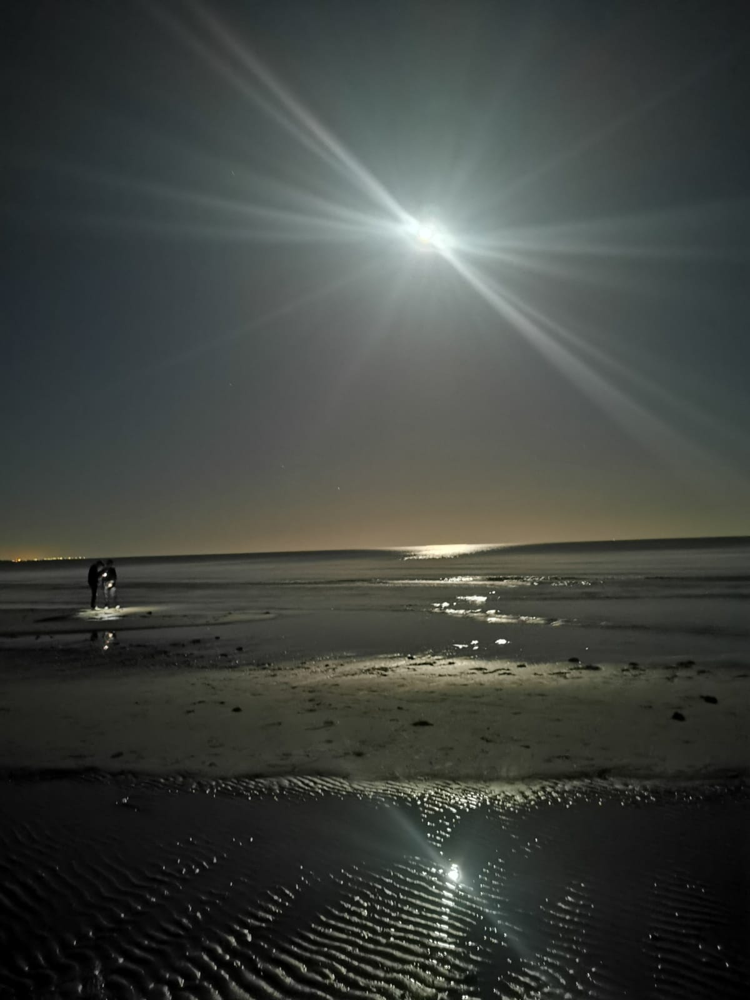
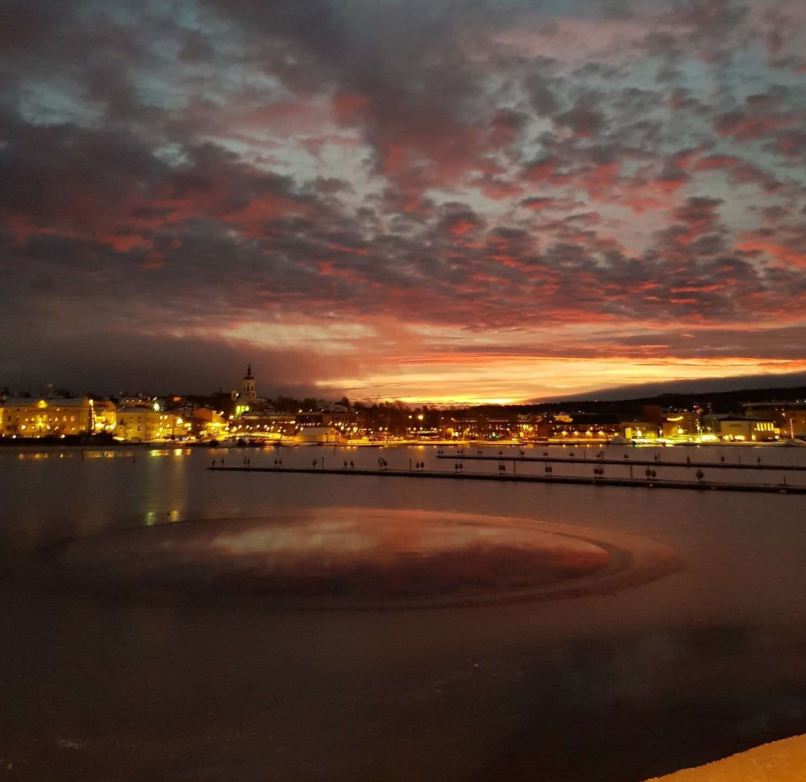
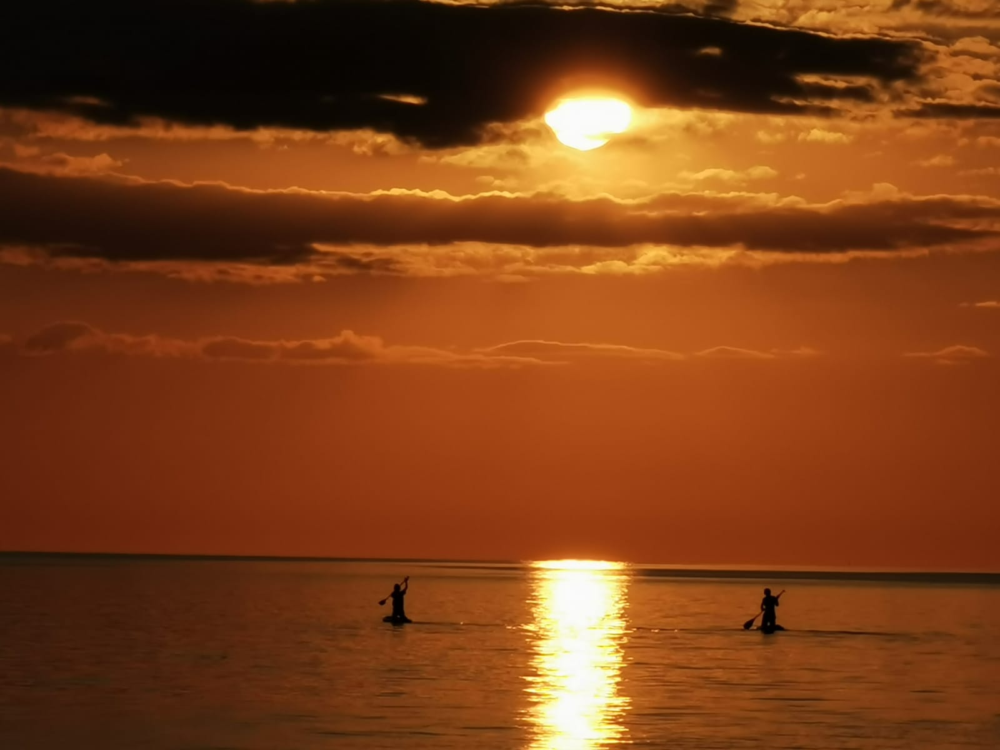

Fotografering
En teckning från coronatiden



Fotografering är ett av mina intressen. Jag älskar att fota, speciellt när jag ser så vackra landskap.
Jag skulle vilja skapa en hemsida med så vackra bilder, för att visa upp alla bilder jag själv tagit.